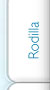

Lesiones de tobillo y pie
Estas se relacionan con actividades de impacto medio-alto (correr, básquetbol, voleibol, danza folklórica y aquellas donde se golpeé el talón).
Así mismo, los padecimientos degenerativos influyen para que se pierda progresivamente el cartílago (estructura de protección y soporte), siendo necesaria una atención oportuna para evitar perder este amortiguador valioso, como son la aplicación de liquido sinovial, ozono, programa de ejercicios, uso correcto de tobilleras, tenis o en determinado momento de acuerdo al grado o tipo de lesión, la necesidad indispensable de laser como medida de estimulación para cartílago (siendo esto hoy en día, una medida eficiente y justificada desde el punto de vista científico) ya que al realizar un estímulo mecánico, las células se defienden produciendo más tejido y evitando que se pierda el dañado.
Por otra parte, la deformidad de los dedos (Juanetes) que ocasiona dolor, se debe en un gran porcentaje a la forma del pié o por casos más severos a la enfermedad de tipo reumática o degenerativa, siendo necesario la corrección de los huesos del pié para que se pueda obtener una alineación adecuada y por consiguiente un mejor apoyo al caminar, disminuyendo el dolor y mejorando la imagen; *recuerde usted, que las plantillas no curan ni evitan la deformidad, así que no espere, más vale hacer una valoración integral preventiva para solucionar su problema.
Observe la deformidad tan severa que presenta esta paciente de 56 años y que le genera dolor importante.
Misma paciente sometida a cirugía de alineación y colocación de injerto en la base del hueso con evolución satisfactoria y mejora estética.